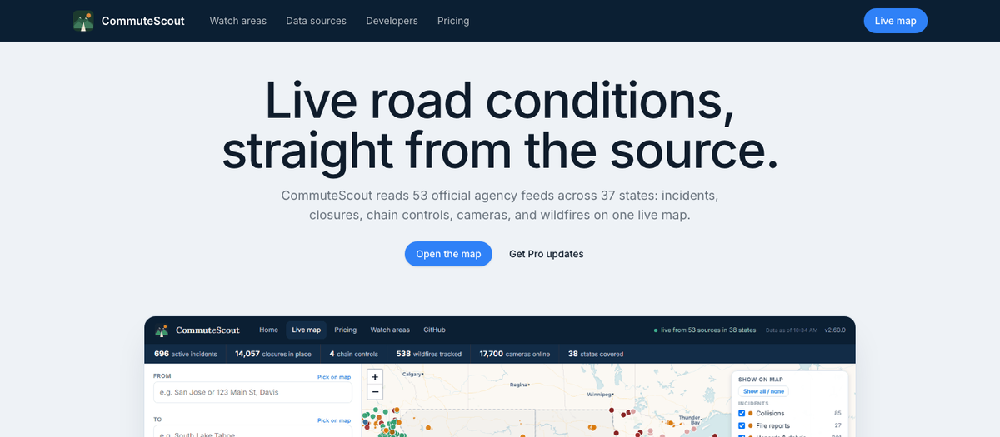
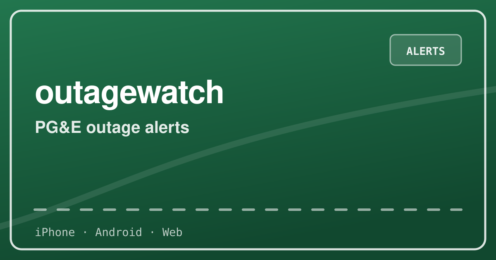
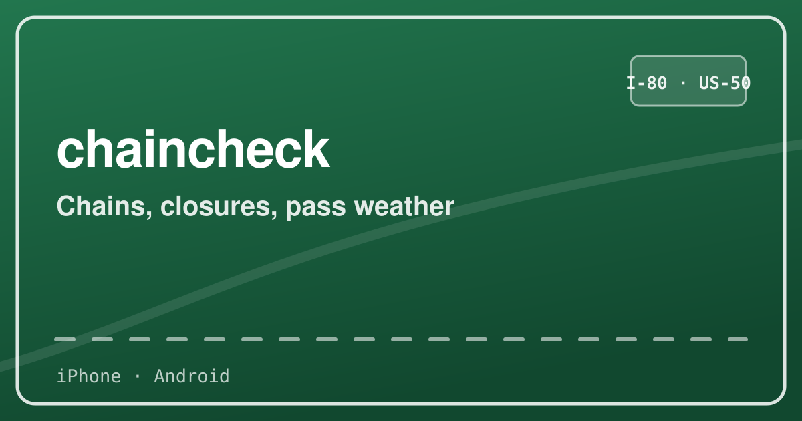
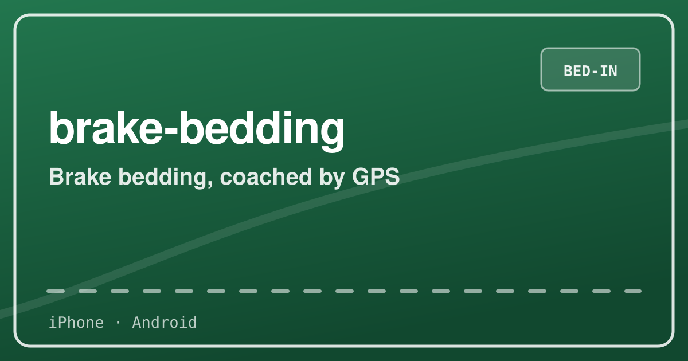
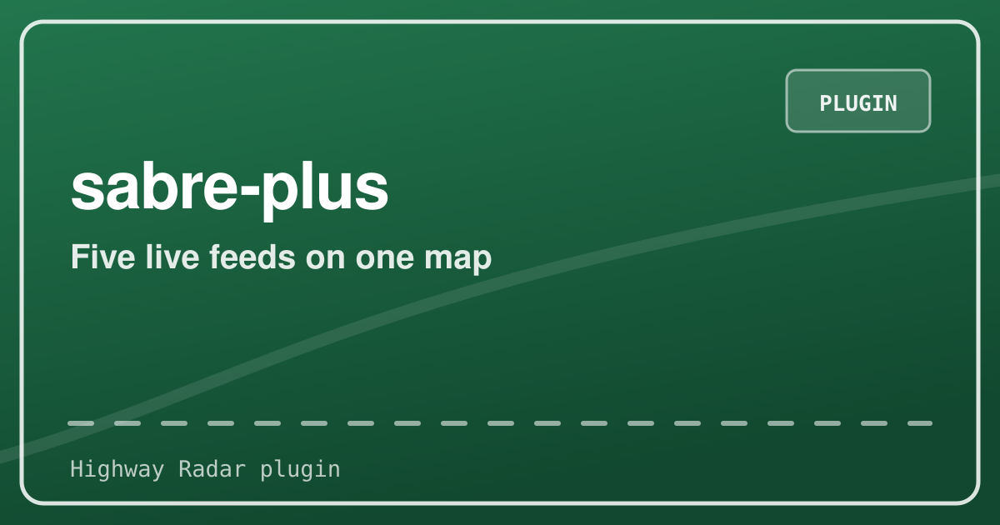
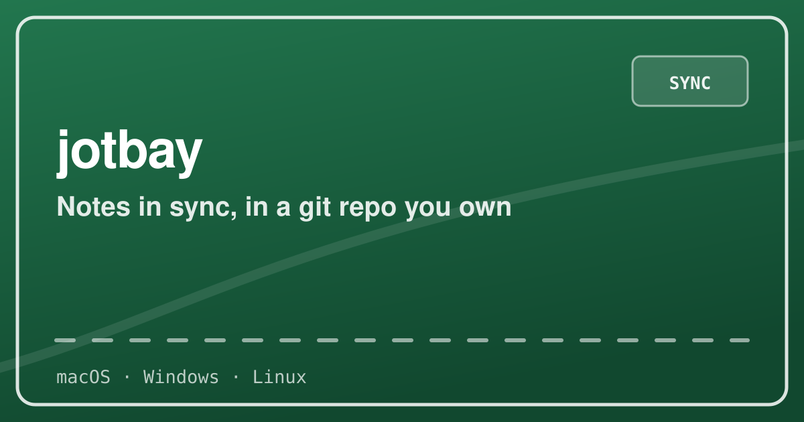
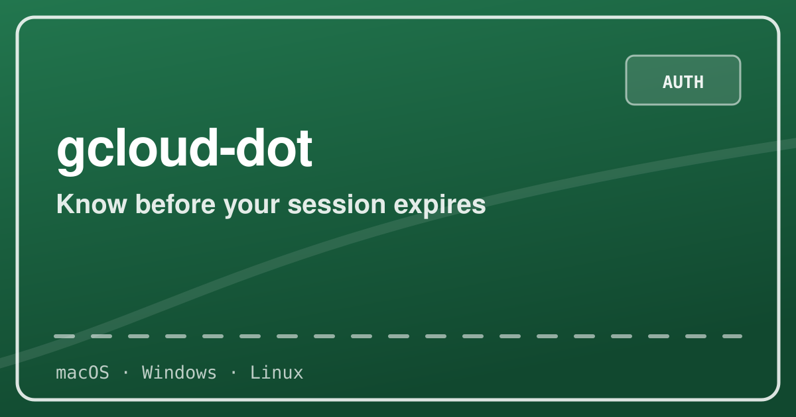
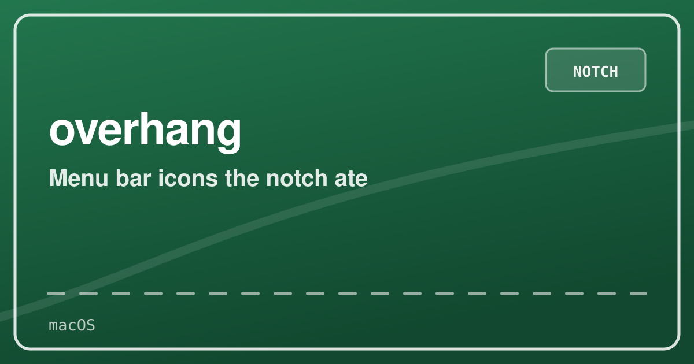
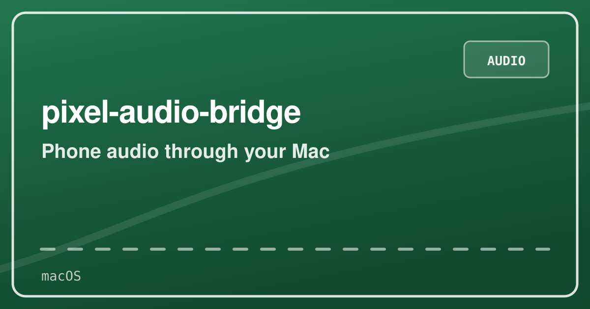
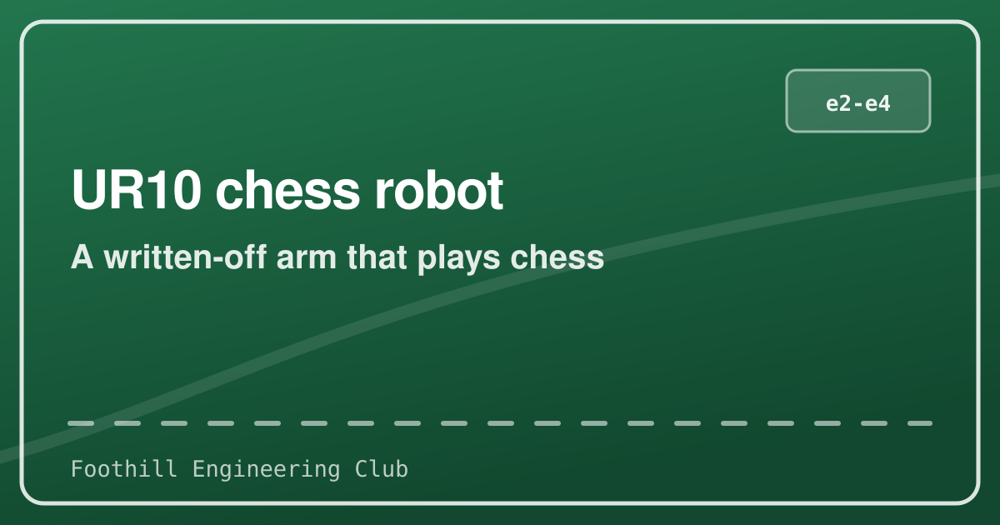

Nic Glazkov
Building software about the physical world.
CS student at Santa Clara University. Most of these are live. Try one.

Live road conditions from 53 official agency feeds: incidents, closures, chain controls, roughly 18,000 traffic cameras, wildfire perimeters, and toll pricing. Map, route planner, and an assistant you can ask about a drive. Also an MCP server, so your assistant can use the same data.

Type any US address, see every ISP that files coverage there, and get an email when something better arrives. Built on 49.1 million FCC records covering 2,067 providers.

PG&E outage alerts with live restoration estimates. Know before the lights go out.

Tahoe winter driving in one app: live chain controls, closures, pass weather, and resort snow. The chain rules are tested code, not prose.

A brake bedding coach with live GPS speed cues. No network permission, no ads, no tracking.

Five live data sources on your Highway Radar map: CHP, Waze, Caltrans closures, wildfires, chain controls.

Keeps a folder of markdown notes in sync across every machine you use, through a git repository you own.

Know before your gcloud session expires, not after your next command fails. A menu bar dot that measures it and learns how long your sessions last.

Recovers the menu bar icons macOS hides behind the notch. Under 2 MB, no private APIs, and it asks for no permissions at all.

Hear your Android phone through the headphones connected to your Mac. About 20 ms of buffering on the wired path; anything past that is your headphones, and the app says which is which.

Turns any topic into a narrated math animation through a pipeline of agents that draft, fact-check, animate, and render it. Open source; the hosted version is invite-only with a waitlist.

A written-off industrial arm we rebuilt to play chess. It has not lost to a human yet.